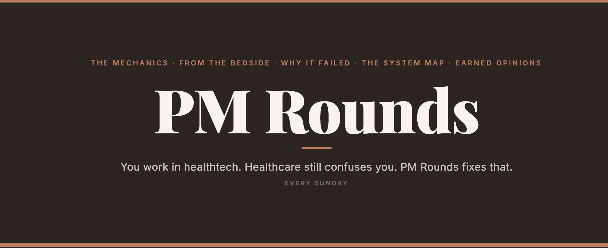

Product Manager · Health Data Interoperability & AI Clinical Applications
Most product managers discover broken healthcare workflows in discovery interviews.
I discovered them at the bedside.
6+ years across clinical practice, health data analytics, and product management. Specializing in interoperability, AI clinical applications, and value-based care.
About Me
Before I was a product manager, I was the person inside the broken workflow — processing prior auth denials while a patient waited, watching discharge failures become readmissions, learning firsthand what happens when the data doesn't move and a person pays the price.
I started my career as a clinical dietitian, working both inpatient and outpatient across ICU, dialysis, pediatrics, and labor & delivery. After moving to the US and completing my Master's in Healthcare Administration, I stepped into acute care as a Prior Authorization and Care Transition Specialist — navigating denial reversals, discharge failures, and readmission crises inside a safety-net hospital. That combination of direct patient care and operational healthcare reality is what most PMs never get.
Today I specialize in health data interoperability, intelligent document processing, and AI-powered clinical applications — building products at the intersection of the care continuum and digital health infrastructure. I work fluently across C-CDA, Direct Secure Messaging, HL7, FHIR, EHR integration, HIE, RCM, and prior authorization workflows.
I'm passionate about closing the gaps that still define American healthcare: fragmented data, siloed systems, administrative burden that steals time from patient care. That passion shows up in how I define problems, build roadmaps, and push products past the finish line.
Experience
Concord Technologies · B2B SaaS · 5B pages PHI/yr · 3 of 5 largest US payers
CareJourney by Arcadia · 2M+ providers · 300M beneficiaries · 10+ yrs longitudinal claims
Kern Medical · Safety Net Hospital · Bakersfield, CA
Case Studies
Board investment secured, 8 engineers led, product launched at HIMSS 2026 — built from nothing as the only clinical PM in a telecom company.
Read Case Study →A React prototype I built in 3 weeks — grounded in a workflow I personally worked inside at Kern Medical, where I watched patients slip through the cracks.
View Prototype →Before I was a PM, I was the person inside the broken workflow — and the one who redesigned it. Readmission rate improvement toward CMS's ≤80th percentile target.
Read Story →Working at the boundary between data science and product — writing measure logic in SQL, translating ML outputs into VBC features across 300M+ patient lives.
Read More →How I identified the market gap, built the business case, ran end-to-end vendor evaluation, defined the product, led 8 engineers, and launched at HIMSS 2026 — as Concord's only healthcare domain expert.
Care coordinators manage patient information arriving through fax, portals, email, and DSM — each in different formats, each requiring manual reconciliation before care can move forward. 60% of healthcare leaders report their admin staff spend 4+ hours per day triaging incoming documents. Referrals arrive missing labs. Discharge summaries land in generic inboxes. Care transition loops break silently, with no one closing them.
Meanwhile, the industry was clearly moving toward structured exchange: hospitals receiving information via DSM jumped from 54% to 73% between 2018 and 2023. Hospital adoption was growing 52% year over year. The DirectTrust network carried 466M+ direct messages in Q1 2025 alone. The shift was happening — with or without Concord.
Concord was already building into the Intelligent Document Processing (IDP) space — processing 5 billion pages of PHI per year for 3 of the 5 largest US payers. But they were positioned as a cloud fax company. DSM was the missing protocol layer that made the IDP story credible to healthcare buyers — and the table-stakes capability competitors were already offering.
Concord's commercial DNA was telecom and fax — a company of 200+ where clinical PMs were rare. I brought the healthcare fluency the product required: understanding the workflows DSM was meant to fix, the personas using it, and the jobs-to-be-done that would make or break adoption in a clinical setting. That context isn't learnable from a discovery interview — it comes from having worked inside the systems.
Beyond domain expertise, I built the product infrastructure that didn't exist before I arrived: the healthcare market segmentation framework, the usability testing program, and the product release communication process — owned end-to-end. I also drove the discovery framework and the feature request prioritization system alongside the broader product team. All of it happened in parallel with defining, designing, and shipping DSM.
DSM wouldn't just be another messaging channel bolted onto Concord Connect. The vision was a unified multi-modal intake platform — one inbox where C-CDA documents, digital faxes, PDFs, and images arrive together, get classified by AI, and route automatically to the right EHR queue without manual intervention. Straight-Through Processing from receipt to system of record. No coordinator bottleneck. No data re-entry. No broken loops.
This solved four concrete workflow failures in healthcare: fragmented multi-channel triage, incomplete referrals missing structured data, mixed DSM + fax reconciliation, and care transition loops that closed with no visibility.
A fully functional React prototype I built in three weeks — grounded in a workflow I observed firsthand at Kern Medical while tracking discharged patients for readmission risk.
On the Acute Care Transition team at Kern Medical, part of my work involved tracking discharged patients for readmission risk — which meant I sat alongside care coordinators and LVNs and watched how post-discharge follow-up actually worked. What I saw was entirely manual, fragmented, and invisible. Coordinators worked off printed patient lists, hunted through massive EHR charts for three relevant facts per patient, scrolled through scheduling systems to find open slots, and discovered critical care gaps mid-call with no structured way to escalate or log what happened.
I was seeing both sides simultaneously: the broken workflow and the downstream outcome — who came back to the ER, and when. At 20 patients a day per LVN, that's a 10-hour workload inside an 8-hour shift. The result: missed appointments, broken care coordination, and preventable readmissions — which cost hospitals an average of $220,000 annually in CMS penalties. Before building v2, I spoke with a former LVN from that team who confirmed the core workflow hasn't fundamentally changed.
Tether sits between the EHR and the scheduling system as an intelligence layer. It automatically surfaces AI-generated pre-call chart summaries with confidence scoring — so the LVN walks into every call knowing the three things that matter, not hunting for them. It matches scarce appointment slots to patients based on risk level and social barriers, not arrival order. And it tracks every escalation from trigger to resolution with full accountability, so nothing gets lost between the call and the follow-up.
A fully functional React prototype, iterated over three weeks from v1 to v2. V1 established the core workflow — pre-call summaries, slot matching, and escalation logging. V2 addressed the harder problems: automation bias (when should the coordinator override the AI?), failure states, edge cases in complex patients, and escalation management across shift changes. Every design decision was grounded in direct clinical experience working inside the exact workflow Tether is built to improve.
A fully functional React prototype — not a mockup. Built to test whether the problem was actually solvable, and how.
Launch Tether Prototype →I didn't build Tether to add something to a portfolio. I built it because I watched that workflow break in real time, saw the patients it failed, and wanted to know whether the problem was actually solvable — and how.
Before I was a PM, I was the person inside the broken workflow — and the one who fixed it.
Kern Medical is a safety-net hospital serving a high-acuity, underinsured population in Bakersfield, CA. Readmission rates were at the 90th percentile — well above CMS's optimal target of ≤80th. Patients were being discharged without adequate disease management education, without medication reconciliation, and without structured follow-up. The discharge process was fragmented across nursing, pharmacy, and care coordination with no shared protocol.
Simultaneously, prior authorization denials with non-contracted payers were blocking patient access to care and creating financial drag on the hospital. Denial reversal rates were low and the process was reactive.
I used clinical and claims data to identify correlations between readmission risk and gaps in patient education, medication adherence, and follow-up compliance. With that data, I redesigned the nursing discharge process — introducing structured disease management education, medication reconciliation at discharge, and a cross-functional ACT team post-discharge protocol across nursing, discharge planning, and pharmacy.
On prior authorization, I built a systematic documentation and payer negotiation process that turned reactive denials into proactive approvals — directly improving patient access to care and hospital financial performance.
This wasn't a product role. But it's where the product thinking started — using data to find the gap, redesigning a workflow cross-functionally, and measuring the result. The same instincts show up in every product I've built since.
Working at the intersection of data and product at a healthcare analytics company building value-based care intelligence across 300M+ patient lives.
CareJourney (now part of Arcadia) is a healthcare analytics company that turns longitudinal Medicare, Medicaid, and commercial claims data into actionable VBC intelligence — provider performance benchmarking, network optimization, referral management, and at-risk population identification across 2M+ physicians. The platform serves health systems, payers, and ACOs navigating MSSP and ACO REACH arrangements.
As a Data & Product Analyst, I sat at the boundary between the data science team and the product — close enough to the claims infrastructure to write measure logic directly in SQL, close enough to the product to translate model outputs into features customers could act on.
Supported expansion of the Provider Performance Index scoring product to new subspecialties including general surgery — working alongside Data Science to translate ML model outputs for risk adjustment and episode-of-care analysis into product features that gave health system customers actionable intelligence for referral network optimization and VBC strategy.
Wrote clinical process quality measures directly in SQL using CCLF-based Medicare claims data — defining numerator and denominator logic to determine measure compliance across claims schemas. Built provider attribution tables using commercial claims data from Change Healthcare, constructing patient-to-provider mapping that surfaced into the platform's aggregated reporting layer for VBC customers. Worked in Python for data exploration and validation pipelines, and queried across Snowflake-hosted data warehouses as part of the analytics workflow.
What I Bring
I'm the PM who can read a C-CDA, explain what's wrong with the discharge summary it carries, and then write the user story to fix the intake workflow — without asking a clinician to translate.
I'm the PM who builds the infrastructure before building the product. Discovery frameworks, prioritization systems, market segmentation, release comms — if it doesn't exist, I build it.
I'm the PM who can present a 6-figure business case to a board in the morning and run a usability session with a care coordinator in the afternoon — and code-switch between both without losing either audience.
I'm the PM who doesn't need a discovery interview to understand prior auth denials or discharge failures. I lived them. That's not a talking point — it's the reason the products I build actually fit how clinicians work.
I'm the PM who ships in ambiguity. At Concord I was the only clinical PM in a telecom company, with no playbook and no predecessor. I shipped anyway.
I'm the PM who writes. PM Rounds exists because the industry needs more product voices that have actually rounded on a hospital floor — not just interviewed someone who did.
Technical fluency
Newsletter

You work in healthtech. Healthcare still confuses you. PM Rounds fixes that. Every Sunday.
Contact
Building in interoperability, AI clinical applications, or value-based care? I'd love to connect.